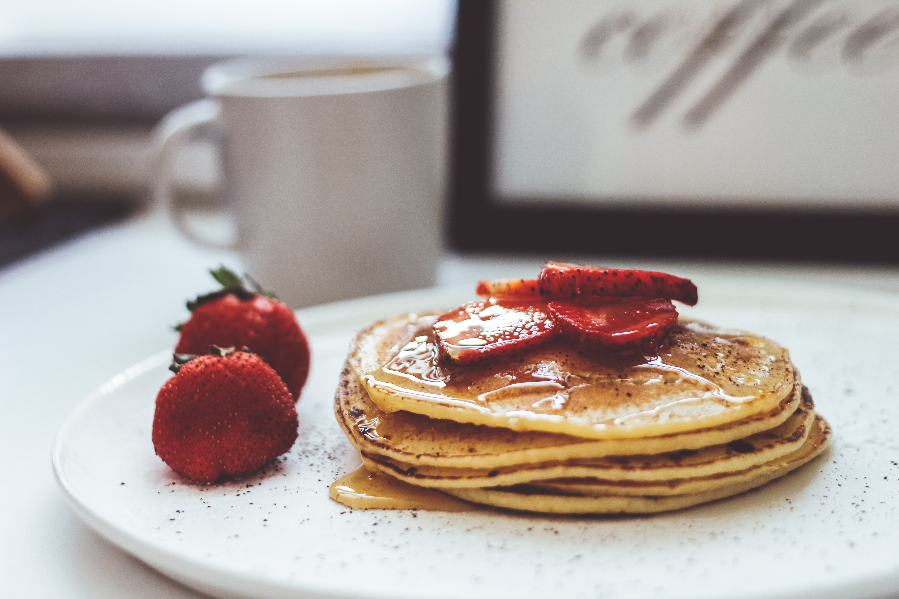

Like!
사진찍기
10cm 노래듣기
팬케이크 먹기

팬케이크 먹기
여기는 딱히 적을 내용이 없네요... 네. 저 팬케이크 좋아해요. 그런데 사실 팬케이크 뿐만 아니라
밀가루로 뽀쟉뽀쟉 만드는 음식은 거의 다 좋아해요!
케이크나 쿠키 같은 과자류는 아주 그냥 없어서 못 먹습니다. 장난이구 사실 요즘은 있어도 잘 안먹어요. 카페가서 예쁜 것 있으면 가끔 먹는 정도? 네 쨋던 그렇습니다 하하.